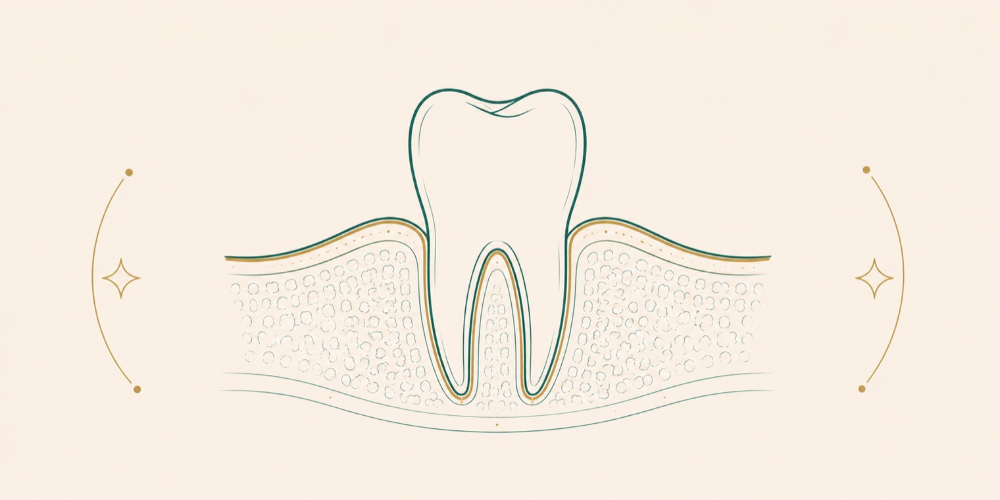

Diş fırçalarken kanayan diş etini çoğu insan önemsemez. Oysa diş eti kanaması, çoğu zaman diş eti iltihabının ilk ve en erken belirtisidir. İyi haber şu: bu erken dönemde fark edilip müdahale edildiğinde durum genellikle geri döndürülebilir. Bu rehberde diş eti kanamasının neden olduğunu, ne zaman ciddiye alınması gerektiğini, diş eti hastalıklarının evrelerini ve korunma yollarını sade bir dille anlatıyoruz. Kesin tanı ve tedavi, muayene sonrasında hekiminiz tarafından belirlenir.
Diş eti neden kanar?
Sağlıklı bir diş eti, fırçalama sırasında genellikle kanamaz. Kanamanın en sık nedeni, diş ve diş eti sınırında biriken bakteri plağıdır. Plak, gözle zor fark edilen, yapışkan ve bakteri içeren ince bir tabakadır. Temizlenmeyen plak, diş etinde iltihaplanmaya yol açar; iltihaplı diş eti ise hassaslaşır ve en küçük temasta kanar. Yani kanama çoğu zaman "fırçalamaya bağlı" değil, "iltihaba bağlı" bir belirtidir. Zamanla sertleşen plak diş taşına (tartar) dönüşür ve yalnızca profesyonel temizlikle uzaklaştırılabilir. Hormonal değişiklikler (gebelik gibi), bazı ilaçlar, ağız kuruluğu ve sigara da diş eti sağlığını etkileyen etkenlerdir.
Diş eti kanaması ciddi mi?
Tek başına ara sıra görülen hafif bir kanama panik nedeni değildir; ancak göz ardı edilmemesi gereken bir uyarı işaretidir. Kanama, vücudun "bu bölgede iltihap var" mesajıdır. Aşağıdaki durumlarda diş etini daha ciddiye almak gerekir:
- Kanama günlerce sürüyor veya sıklaşıyorsa
- Diş etleri kızarık, şiş veya hassassa
- Ağızda sürekli kötü koku veya tat varsa
- Diş etleri çekiliyor, dişler uzun görünüyorsa
- Dişlerde sallanma veya konum değişikliği varsa
Bu belirtiler, iltihabın diş etinden daha derin dokulara ilerlemiş olabileceğini gösterir. Erken değerlendirme, ileri dönem sorunların önüne geçmenin en etkili yoludur.
Diş eti hastalıklarının evreleri
Diş eti hastalıkları tek bir tablo değildir; hafif ve geri döndürülebilir bir aşamadan, destek dokuları etkileyen daha ileri bir aşamaya doğru ilerleyebilir.
- Gingivitis (diş eti iltihabı): Yalnızca diş etini ilgilendiren, erken ve geri döndürülebilir aşamadır. Belirtileri kanama, kızarıklık ve hafif şişliktir. Uygun bakımla genellikle tamamen düzelir [1].
- Periodontitis (diş eti hastalığının ilerlemiş biçimi): İltihap, dişi çevreleyen kemik ve bağ dokusuna ilerlediğinde ortaya çıkar. Diş eti çekilmesi, cepler ve zamanla diş kaybı görülebilir. Bu aşamada oluşan kemik kaybı geri döndürülemez, ancak tedaviyle durdurulabilir [2].
Bu ilerleyişin en önemli mesajı şudur: gingivitis aşamasında müdahale, çok daha ciddi olan periodontitisin önüne geçer. Bu yüzden erken belirti olan kanama önemlidir.
Diş eti sağlığı neden bu kadar önemli?
Diş eti, dişlerin ve tüm restorasyonların üzerinde durduğu temeldir. Sağlıklı bir diş eti olmadan; ne implant, ne kaplama, ne de köprü uzun ömürlü olur. Diş eti hastalığı, aynı zamanda dişlerin en yaygın kayıp nedenlerinden biridir. Bunun yanında, diş eti sağlığının genel sağlıkla ilişkisine dair bilimsel ilgi de artmaktadır. Bu nedenle diş eti sağlığı, sadece "diş" değil, genel sağlığın bir parçası olarak değerlendirilir.
Diş eti sağlığı nasıl korunur?
Diş eti hastalıklarının büyük bölümü önlenebilir. Korunmanın temeli, diş yüzeyinde ve diş eti sınırında plak birikmesini engellemektir:
- Günde iki kez fırçalama: Yumuşak fırçayla, diş eti sınırına özen göstererek.
- Günlük arayüz temizliği: Diş ipi veya arayüz fırçalarıyla, fırçanın ulaşamadığı yerlerin temizlenmesi.
- Düzenli hekim kontrolü ve profesyonel temizlik: Sertleşmiş plak (diş taşı), yalnızca klinikte temizlenebilir.
- Sigaradan uzak durmak: Sigara, diş eti sağlığını olumsuz etkileyen ve belirtileri maskeleyebilen bir etkendir.
Bu alışkanlıklar, hem diş eti kanamasını azaltır hem de ileri dönem sorunların önüne geçer. Kanama düzenli bakıma rağmen sürüyorsa, altta yatan nedenin değerlendirilmesi için hekime başvurulmalıdır.
Diş eti sağlığı ile genel sağlık ilişkisi
Diş eti hastalığı yalnızca ağzı ilgilendiren bir sorun olarak görülmemelidir. Bilimsel çalışmalar, kronik diş eti iltihabı ile bazı genel sağlık durumları arasında bir ilişki bulunduğunu göstermektedir [1]. Örneğin diyabet ile diş eti hastalığı çift yönlü etkileşir: kontrolsüz diyabet diş eti sağlığını olumsuz etkilerken, ileri diş eti iltihabı da kan şekeri kontrolünü zorlaştırabilir. Bu nedenle diyabet hastalarında düzenli diş eti kontrolü ayrıca önemlidir. Diş eti sağlığını korumak, hem ağız hem de genel sağlık açısından bütüncül bir yaklaşımın parçasıdır. Bu ilişki bir "kesin neden-sonuç" olarak değil, dikkate alınması gereken bir bağlantı olarak değerlendirilmelidir.
Diş taşı nasıl oluşur, neden tehlikeli?
Diş eti sağlığını tehdit eden en önemli etkenlerden biri diş taşıdır. Diş yüzeyinde biriken yumuşak plak, düzenli temizlenmediğinde tükürükteki minerallerle sertleşir ve diş taşına (tartar) dönüşür. Bir kez sertleştikten sonra diş taşı, fırça veya diş ipiyle çıkarılamaz; yalnızca klinikte profesyonel temizlikle uzaklaştırılabilir. Diş taşının tehlikesi, pürüzlü yüzeyinin daha fazla bakteri barındırması ve diş eti sınırının altına doğru ilerleyerek iltihabı derinleştirmesidir. Bu nedenle düzenli profesyonel temizlik, diş eti hastalığının önlenmesinde önemli bir rol oynar.
Diş eti çekilmesi neden olur?
Diş eti çekilmesi, diş etinin diş yüzeyinden geri çekilerek kök yüzeyinin açığa çıkmasıdır. En sık nedenleri; ilerlemiş diş eti hastalığı, sert fırçalama, diş gıcırdatma ve yanlış fırçalama tekniğidir. Çekilme ilerledikçe dişler daha uzun görünür, sıcak-soğuğa karşı hassasiyet artar ve kök yüzeyi çürüğe daha açık hale gelir. Diş eti çekilmesi kendiliğinden geri dönmez; ancak nedeni ortadan kaldırıldığında ilerlemesi durdurulabilir. İleri durumlarda, açığa çıkan kök yüzeyini örtmek için diş eti cerrahisi seçenekleri değerlendirilebilir. Erken fark edildiğinde, çoğu zaman basit önlemlerle ilerlemesi önlenebilir.
Diş eti hastalığı nasıl tedavi edilir?
Tedavi, hastalığın evresine göre değişir. Erken dönemde profesyonel temizlik ve doğru ev bakımı çoğu zaman yeterlidir. Daha ileri durumlarda, diş eti altındaki plak ve diş taşının temizlendiği derin temizlik (diş yüzeyi düzleştirme) uygulanabilir. İleri vakalarda cerrahi yaklaşımlar gündeme gelebilir. Tedavinin başarısı, hastanın ev bakımını sürdürmesine ve düzenli kontrollere gelmesine bağlıdır. Diş eti sağlığı kazanıldıktan sonra implant gibi tedaviler daha sağlam bir zeminde planlanabilir; bu ilişkiyi implant rehberimizde de görebilirsiniz.
Sık sorulan sorular
Diş eti kanaması kendiliğinden geçer mi?
Düzenli ve doğru ağız bakımıyla erken dönem diş eti iltihabına bağlı kanama çoğu zaman birkaç hafta içinde geriler. Ancak bakıma rağmen sürüyor veya artıyorsa, altta yatan nedenin değerlendirilmesi için hekime başvurulmalıdır.
Fırçalarken kanıyor diye fırçalamayı bırakmalı mıyım?
Hayır. Kanayan bölgeyi fırçalamaktan kaçınmak, plak birikimini artırarak iltihabı derinleştirir. Yumuşak bir fırçayla, nazikçe ve düzenli fırçalamaya devam etmek genellikle kanamayı zamanla azaltır.
Diş eti çekilmesi geri döner mi?
Diş eti çekilmesi ve buna eşlik eden kemik kaybı kendiliğinden geri dönmez. Ancak uygun tedaviyle ilerlemesi durdurulabilir. Bu yüzden erken belirtilerin fark edilmesi ve zamanında müdahale önemlidir.
Diş taşı temizliği diş etine zarar verir mi?
Profesyonel diş taşı temizliği, diş etine zarar veren değil, onu koruyan bir işlemdir. Temizlik sonrası kısa süreli hassasiyet görülebilir; bu, temizlenen bölgenin sağlığına kavuşmasıyla geriler.
Diş eti hastalığı bulaşıcı mı?
Diş eti hastalığının kendisi klasik anlamda bulaşıcı bir hastalık değildir. Ancak hastalığa yol açan bakteriler tükürük yoluyla aktarılabilir. Belirleyici olan kişinin ağız bakımı ve genel diş eti sağlığıdır.
Ne sıklıkla diş taşı temizliği yaptırmalıyım?
Diş taşı temizliğinin sıklığı kişinin ağız sağlığına, plak birikme hızına ve diş eti durumuna göre değişir. Bazı kişilerde plak daha hızlı sertleşir ve daha sık temizlik gerekebilir. Size uygun aralığı, ağız içinizi değerlendiren hekiminiz belirler.
Kaynakça
- American Academy of Periodontology (Amerikan Periodontoloji Akademisi). Gum disease ve gingivitis hasta bilgilendirme kaynakları. perio.org
- American Dental Association (Amerikan Diş Hekimleri Birliği). Gum disease, MouthHealthy hasta bilgilendirme portalı. mouthhealthy.org
- Türk Diş Hekimleri Birliği (TDB). Ağız ve diş sağlığı hasta bilgilendirme kaynakları. tdb.org.tr
Bu konu hakkında soru sormak ister misiniz? Diş hekimlerimize dilediğiniz saatte yazabilirsiniz.
Bize yazın